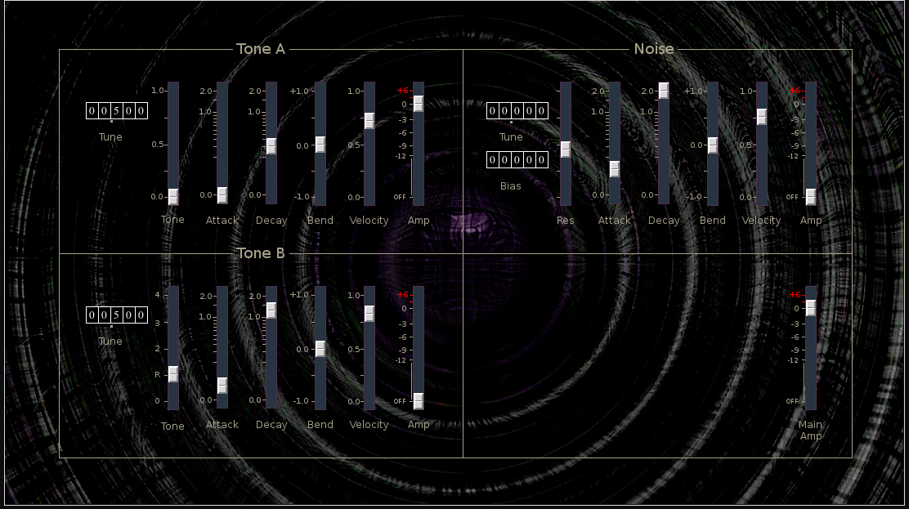

| Home | Contents | Synth Catalog | Previous: MASA | Next: Saw3 |
RDrum is an extension of the "Risset Drum", an additive technique developed by Jean Claude Risset for the synthesis of drum sounds. It is capable of producing realistic drum sounds, at least over a short range.
The original Risset Drum had 4 sine wave partials, one at the fundamental and the remaining three at specific non-harmonic frequencies. RDrum treats the fundamental separately from the other three partials and adds a noise component.
The RDrum components are:The controls for Tone A and Tone B are nearly identical. The Noise section adds a few additional parameters but it too is very similar to the other two sections.

Tone A is a single sine/square wave with relative tuning set by the tune
tumbler control on the left
Tone Mix between sine and square waves, 0=sine, 1=square.
Attack time
Decay time
Bend, amount of envelope applied to pitch bend, either negative or positive.
Velocity
Amp See amp slider
Tone B consist of 3 non-harmonic sine partials. The controls for Tone B are identical to those of Tone A with exception of the Tone control. For tone B the tone control sets the relative frequencies of the component partials. The "R" tick marks the classic Risset Drum frequencies.
The noise section consist of band-pass filtered white noise with the same
envelope controls as Tones A and B.
Tune tumbler - filter tracking amount
Bias tumbler - fixed filter frequency
Res filter resonance
Attack time
Decay time
Bend envelope application to filter frequency
Velocity
Amp
| Home | Contents | Synth Catalog | Previous: MASA | Next: Saw3 |